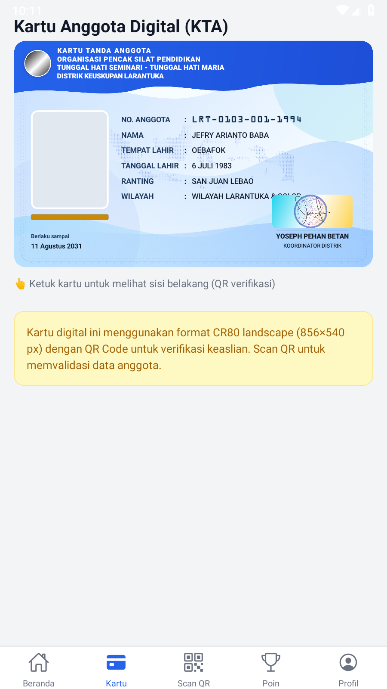

Mobile (LDPlayer, APK 8416c1d2) vs Web produksi — kartu sisi depan.
Keduanya memuat data dari API yang sama (Jefry Arianto Baba). Foto member 404 di produksi → keduanya menampilkan siluet fallback.
Mobile — LDPlayer

Web — preview produksi (render CSS identik)